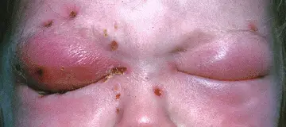

DX.5 — Rhinosinusite aiguë bactérienne
La rhinosinusite aiguë bactérienne reste rare, car elle ne complique que 0,5 à 2 % des rhinosinusites aiguës de l’adulteS2. Le médecin la retient sur la durée, la sévérité ou la double aggravation, puis il cherche surtout les signes orbitaires et neurologiques qui imposent une hospitalisationS1S4. Chaque dose suit l’information professionnelle suisse (AIPS) de Swissmedic, citée mot pour mot pour la grossesse, l’allaitement et les contre-indications.
Ce cours sur la rhinosinusite aiguë bactérienne reprend les sources citées ; il n’a pas été validé cliniquement par un médecin.
1. Définition
La rhinosinusite aiguë bactérienne (RSAB) est une infection bactérienne des sinus paranasaux et des fosses nasales, qui survient au décours d’une rhinosinusite aiguë viraleS4S3. Elle se définit cliniquement chez l’adulte lorsque trois critères ou plus associent un écoulement coloré, une douleur locale sévère, une fièvre, une inflammation biologique et une double aggravationS4.
2. Épidémiologie (Suisse, puis Europe)
La rhinosinusite aiguë (RSA) touche environ 6 à 15 % de la population, soit un adulte sur huit, selon l’institut bernois de médecine de famille (BIHAM)S2. Elle constitue le cinquième diagnostic qui mène à une prescription d’antibiotiques, alors que l’origine virale domine à 98–99,5 %S2. La forme bactérienne concerne seulement 0,5 à 2 % des adultes, mais 5 à 13 % des enfants, ce qui change la vigilance en pédiatrieS2. Les chiffres utiles rassemblent ces fréquences, tandis que les germes et résistances expliquent le choix de l’antibiotique en SuisseS2S1.
Chiffres utiles : Suisse, puis Europe
| Donnée | Valeur | Population, lieu, date | Source |
|---|---|---|---|
| Prévalence de la RSA | 6 à 15 % (1 adulte sur 8) | Population générale, BIHAM, version 2.9.24 | S2 |
| Rang parmi les motifs d’antibiotiques | 5e diagnostic | Médecine de famille, BIHAM | S2 |
| Incidence de la RSA virale | 2 à 5 épisodes par personne et par an | BIHAM | S2 |
| Part bactérienne de la RSA | 0,5–2 % (adultes) ; 5–13 % (enfants) | BIHAM ; European Position Paper on Rhinosinusitis (EPOS) 2020 pour l’adulte | S2S4 |
| Complications | 3 par million et par an, jusqu’à 1 sur 32 000 chez l’adulte | BIHAM | S2 |
| Guérison spontanée | > 50 % à 1 semaine, 60–80 % à 2 semaines, > 90 % à 4 semaines | RSA virale ou bactérienne, BIHAM | S2 |
| Durée moyenne de la RSA | 2 à 3 semaines | BIHAM | S2 |
| RSA récidivante | ≥ 4 épisodes par an avec intervalles libres | Europe, EPOS 2020 | S4 |
| Complications orbitaires de l’adulte | 213 patients, âge médian 48 ans, 65,3 % d’hommes | Cohorte multicentrique européenne, 2025 | S5 |
La ligne des guérisons spontanées justifie l’attente vigilante, puisque la majorité des patients guérit sans antibiotique en deux semainesS2. La ligne des complications rappelle en revanche que le danger existe, même s’il reste exceptionnel chez l’adulteS2.
Germes et résistances en Suisse
| Germe | Part dans la RSAB | Résistance utile au choix | Source |
|---|---|---|---|
| Streptococcus pneumoniae | 38 % | Pneumocoque résistant suspecté : amoxicilline 1 g toutes les 8 heuresAIPS 44911 | S2S1 |
| Haemophilus influenzae | 36 % | 20–25 % des souches résistent aux aminopénicillines en Suisse | S2S1 |
| Moraxella catarrhalis | 16 % | Résistante aux aminopénicillines | S2S1 |
| Staphylococcus aureus | Non chiffrée | Mieux couvert par l’amoxicilline–acide clavulanique | S2S1 |
| Virus de la RSA (comparaison) | Rhinovirus 50 % | Aucun antibiotique utile | S2 |
La Société suisse d’infectiologie (SSI) maintient pourtant l’amoxicilline seule en première ligne, comme la France et l’Allemagne, et réserve l’acide clavulanique aux situations particulièresS1. Ce choix limite la pression de sélection, alors que la recommandation américaine de l’IDSA (Infectious Diseases Society of America, source non européenne) proposait l’association pour tousS1.
Dans la cohorte européenne des complications orbitaires, 12,7 % des adultes étaient immunodéprimés, 18,8 % avaient une infection dentaire et 43,2 % une rhinosinusite chronique sous-jacenteS5. Ces terrains doivent donc alerter le médecin de famille, même si la cohorte provient de centres hospitaliers et surestime les formes gravesS5.
3. Physiopathologie
Le parcours d’EPOS 2020 distingue la rhinosinusite virale, la forme postvirale et la forme bactérienne, qui ne touche qu’un faible pourcentage des formes postviralesS4. La cascade en trois temps montre comment le médecin date chaque étape avec la durée et la courbe des symptômesS4S1.
Cascade en trois temps : du rhume à l’infection bactérienne
| Temps | Ce qui se passe | Repère clinique daté | Conséquence | Source |
|---|---|---|---|---|
| 1. Rhume viral | L’épithélium nasal sert de porte d’entrée aux virus et déclenche l’inflammation | Symptômes < 10 jours | Soins symptomatiques, aucun antibiotique | S4 |
| 2. RSA postvirale | L’inflammation persiste après la virose | Aggravation après 5 jours ou persistance > 10 jours | Corticoïde nasal possible, antibiotique évité | S4 |
| 3. RSAB | Une surinfection par pneumocoque, Haemophilus ou Moraxella s’installe | ≥ 3 critères EPOS ou critère SSI | Antibiothérapie discutée | S4S1S2 |
| 4. Complication | L’infection franchit la paroi osseuse vers l’orbite ou le crâne | Œdème orbitaire, diplopie, signes méningés | Orientation immédiate | S4S5 |
La double aggravation, appelée « double-sickening », signe le passage au troisième temps lorsque la fièvre ou l’écoulement repartent 5 à 6 jours après une améliorationS1. Le tableau reste un modèle clinique, puisque les sources lues ne fournissent aucun marqueur capable de dater la surinfection chez un patient donnéS4.
Le siège du sinus explique la douleur, car chaque cavité draine vers une zone précise et irradie selon ses rapports anatomiquesS1. La topographie des douleurs traduit ces rapports en signes cliniques que le médecin recherche au cabinetS1.
Topographie : sinus atteint et symptôme
| Sinus | Symptôme décrit par la SSI | Risque particulier | Source |
|---|---|---|---|
| Maxillaire | Douleur infra-orbitaire uni- ou bilatérale, accrue tête penchée en avant, parfois pulsatile, maximale en fin d’après-midi et la nuit | Origine dentaire à rechercher | S1S5 |
| Frontal | Céphalée sus-orbitaire | Tuméfaction frontale : drapeau rouge | S1S4 |
| Ethmoïdal | Comblement de l’angle interne de l’œil, œdème palpébral, céphalée rétro-orbitaire | Proximité directe de l’orbite | S1S5 |
| Sphénoïdal | Céphalée rétro-orbitaire permanente irradiant au vertex, mimant une hypertension intracrânienne | Pus visible sur la paroi pharyngée postérieure | S1 |
Les formes frontales, ethmoïdales et sphénoïdales comptent parmi les « cas particuliers » de la SSI, qui justifient l’amoxicilline–acide clavulanique d’embléeS1.
Une complication orbitaire suit une classification de Chandler, que l’équipe européenne de Vinciguerra subdivise en cellulite préseptale (Ia) et abcès préseptal (Ib)S5. La classification de Chandler modifiée relie chaque stade au traitement le plus souvent choisi dans cette cohorte de 213 adultesS5.
Classification de Chandler modifiée et conduite observée
| Stade | Lésion | Part traitée par chirurgie | Lecture pour la pratique | Source |
|---|---|---|---|---|
| Ia | Cellulite préseptale | 31 % (69 % traités médicalement) | Traitement médical le plus souvent | S5 |
| Ib | Abcès préseptal | 87,5 % | Drainage habituel | S5 |
| II | Cellulite orbitaire | 69,2 % | Chirurgie fréquente malgré l’absence de pus | S5 |
| III | Abcès sous-périosté | 86,8 % | Drainage habituel | S5 |
| IV | Abcès orbitaire | 88,2 % | Drainage habituel | S5 |
| V | Thrombose du sinus caverneux | Non chiffrée | Rare (< 1 %), mortalité 20–30 % | S5 |
Le stade, plus que l’opacité des sinus ou la baisse visuelle, prédisait le recours à la chirurgie dans l’analyse multivariée de cette cohorteS5. Ces chiffres viennent de centres spécialisés ; ils guident l’orientation, mais ils ne remplacent pas la décision de l’équipe d’oto-rhino-laryngologie (ORL) et d’ophtalmologieS5.
Sinus enflammés et voisinage de l’orbite. Blausen Medical fournit cette illustration en couleurs, sous licence CC BY 3.0, où le halo rouge figure l’inflammation de chaque sinusS6.

Repérez d’abord seul les quatre paires de sinus colorées, puis cherchez celle qui touche directement l’œil.
La copie annotée numérote cinq repères, du sinus frontal jusqu’à la cloison osseuse qui sépare l’ethmoïde de l’orbite.
- 1. Le repère 1 montre le sinus frontal, dont l’atteinte donne une céphalée sus-orbitaire et peut gonfler le frontS6S1.
- 2. Le repère 2 montre les cellules ethmoïdales, collées à l’orbite, qui expliquent l’œdème palpébral des formes ethmoïdalesS6S1.
- 3. Le repère 3 montre l’œil, que l’infection ethmoïdale menace en premier ; le médecin y cherche œdème, diplopie et baisse visuelleS6S4.
- 4. Le repère 4 montre le sinus maxillaire, siège de la douleur infra-orbitaire accrue lorsque la tête se penche en avantS6S1.
- 5. Le repère 5 montre, sur le crâne, l’ethmoïde au contact de la paroi interne de l’orbite, voie habituelle des complications orbitairesS6S5.
Ce que l’image décide. Un œdème de l’angle interne de l’œil chez un patient atteint de sinusite oriente vers l’ethmoïde et impose un examen orbitaire complet avant toute prescription ambulatoireS1S4.
4. Démarche diagnostique
La démarche commence par confirmer une rhinosinusite aiguë, puis elle date l’évolution, compte les critères de surinfection et cherche les signes d’alarmeS4S2. Les quatre étapes chiffrées donnent pour chacune la question, le seuil et la décision qui en découleS4S1S2.
Démarche diagnostique en quatre étapes chiffrées
| Étape | Question posée | Seuil ou critère | Décision | Source |
|---|---|---|---|---|
| 1. Confirmer la RSA | Deux symptômes sont-ils présents ? | Obstruction ou écoulement, ± douleur faciale, ± baisse de l’odorat | Diagnostic clinique, sans examen | S4S2 |
| 2. Dater | Depuis quand, et avec quelle courbe ? | < 10 jours ; > 10 jours ; aggravation après 5 jours | Virale, postvirale, ou suspicion bactérienne | S4 |
| 3. Compter les critères | Trois critères EPOS sont-ils réunis ? | Écoulement coloré, douleur sévère, fièvre > 38 °C, vitesse de sédimentation (VS) ou protéine C réactive (CRP) élevée, double aggravation | RSAB probable : antibiothérapie discutée | S4 |
| 3 bis. Critères SSI | Une indication suisse est-elle remplie ? | ≥ 10 jours sans amélioration ; ≥ 39,0 °C avec pus ou douleur 3–4 jours ; double aggravation à 5–6 jours | Antibiotique, sinon attente vigilante | S1 |
| 4. Chercher l’alarme | Un signe orbitaire, neurologique ou septique existe-t-il ? | Œdème périorbitaire, diplopie, baisse visuelle, signes méningés | Orientation immédiate | S4S2 |
La VS et la CRP figurent parmi les critères EPOS, mais le BIHAM ne les demande pas sans complicationS4S2. Le médecin de famille compte donc d’abord les critères cliniques, puis il réserve la prise de sang aux tableaux douteux ou graves, par déduction des deux sourcesS4S2.
Le diagnostic différentiel reste étroit, mais il change radicalement la conduite lorsque l’écoulement est unilatéral, fétide, sanglant ou aqueuxS2S4. Le tableau différentiel rassemble, face à la RSAB, les diagnostics voisins du lot et les pièges dentaires ou fongiquesS2S4.
Diagnostic différentiel ciblé
| Diagnostic | Ce qui oriente | Ce qui l’écarte de la RSAB | Source |
|---|---|---|---|
| Rhinosinusite postvirale (DX.4) | Symptômes > 10 jours, sans critère de gravité | Moins de trois critères EPOS | S4 |
| Rhinite allergique (DX.2) | Prurit, éternuements, yeux qui coulent | Absence de fièvre et de pus | S2S4 |
| Origine dentaire | Douleur dentaire, sinusite maxillaire unilatérale | Recherche d’un foyer dentaire | S2S4S5 |
| Balle fongique, résistance, immunodéficience | Échec d’un antibiotique bien conduit | Avis spécialisé | S4 |
| Corps étranger (DX.8) | Enfant, écoulement unilatéral et fétide | Objet visible à la rhinoscopie | S2 |
| Tumeur maligne (DX.10) | Obstruction unilatérale, saignement, croûtes, cacosmie | Persistance malgré le traitement | S4 |
| Céphalée non sinusienne | Migraine, signes neurologiques | Absence de signes nasaux | S4 |
Une douleur faciale isolée, sans obstruction ni écoulement, ne suffit pas à poser une rhinosinusite, car EPOS exige deux symptômes dont un nasalS4.
5. Anamnèse ciblée et drapeaux rouges
L’anamnèse précise le début, recherche la double aggravation et identifie les terrains à risque de complication ou de résistanceS1S2. Les questions ciblées relient chaque réponse à une décision précise, sans interrogatoire inutileS1S2S4.
Questions ciblées et ce qu’elles décident
| Question | Réponse qui inquiète | Décision | Source |
|---|---|---|---|
| Depuis combien de jours, et la courbe est-elle biphasique ? | ≥ 10 jours, ou rechute après 5–6 jours | Indication SSI d’antibiotique | S1 |
| Quelle fièvre avez-vous mesurée ? | ≥ 39,0 °C avec pus ou douleur 3–4 jours | Forme sévère : antibiotique | S1S2 |
| Où siège la douleur ? | Rétro-orbitaire permanente, irradiant au vertex | Penser au sinus sphénoïdal | S1 |
| Voyez-vous double ou moins bien ? | Diplopie, baisse d’acuité | Orientation immédiate | S4S2 |
| Avez-vous mal aux dents ? | Douleur dentaire du même côté | Origine dentaire à traiter | S4S5 |
| Avez-vous pris un antibiotique ce mois-ci ? | Oui | Enfant : co-amoxicilline selon la SSI | S1 |
| Quel est votre terrain ? | Âge < 2 ans ou > 65 ans, immunodéficience, comorbidités multiples | Risque de complication ou de résistance | S2 |
| Avez-vous été hospitalisé récemment ? | Hospitalisation dans les 5 jours | Risque de germe résistant | S2 |
| Êtes-vous enceinte ou allaitez-vous ? | Oui | Doxycycline exclue, choix guidé par l’AIPS | S1AIPS 65952 |
| Avez-vous une allergie à la pénicilline ? | Oui, avec ou sans anaphylaxie | Céfuroxime ou doxycycline selon le type | S1AIPS 56958 |
La question du voyage récent sert aussi au choix de la dose, car la SSI double la fréquence de l’amoxicilline chez un patient venant d’une région à pneumocoques résistantsS1.
Les drapeaux rouges imposent une orientation immédiate, parce que les antibiotiques n’empêchent pas les complications orbitaires ou intracrâniennesS2S4. Les signes d’alarme proviennent du parcours EPOS et de la fiche du BIHAM, qui concordent sur l’orbite, le front et les méningesS4S2.
Signes d’alarme : orientation immédiate
| Région | Signe d’alarme | Complication redoutée | Source |
|---|---|---|---|
| Paupières | Œdème ou érythème périorbitaire | Cellulite préseptale ou orbitaire | S4S2 |
| Globe | Déplacement du globe, ophtalmoplégie | Abcès sous-périosté ou orbitaire | S4S2 |
| Vision | Diplopie, baisse de l’acuité visuelle | Atteinte orbitaire profonde | S4S2 |
| Front, joue | Tuméfaction frontale, induration des joues | Ostéomyélite | S4S2 |
| Tête | Céphalée sévère uni- ou bilatérale | Abcès intracrânien, thrombose veineuse | S4S2 |
| Méninges | Raideur de nuque, photophobie | Méningite | S4S2 |
| État général | Signes de sepsis | Septicémie | S4S2 |
| Système nerveux | Signe neurologique focal | Abcès intracrânien | S4 |
Le délai compte, car la cohorte européenne relève une médiane de 3 jours entre les premiers signes oculaires et l’arrivée à l’hôpitalS5.
6. Examen physique ciblé, région par région
L’examen physique confirme le pus, localise le sinus et surtout recherche une extension, en suivant six régions examinées dans le même ordreS1S4S2. Chaque région est décrite dans sa fenêtre : visage, nez, pharynx, orbite, dents et état général et méningesS1S4.
Région 1 — Visage et sinus
| Geste | Signe recherché | Interprétation | Source |
|---|---|---|---|
| Inspection du front et des joues | Tuméfaction frontale, induration des joues | Drapeau rouge : ostéomyélite possible | S2S4 |
| Tête penchée en avant | Douleur infra-orbitaire accrue | Sinus maxillaire | S1 |
| Palpation sus-orbitaire | Douleur frontale | Sinus frontal : forme particulière SSI | S1 |
| Recherche de latéralité | Douleur unilatérale sévère | Critère EPOS de RSAB | S4 |
Une douleur faciale isolée reste un critère faible, puisque le BIHAM rappelle que les algies faciales et les maladies bucco-dentaires imitent la sinusiteS2.
Région 2 — Fosses nasales
| Geste | Signe recherché | Interprétation | Source |
|---|---|---|---|
| Rhinoscopie antérieure | Écoulement purulent | Compatible, mais non spécifique | S2 |
| Comparaison des deux côtés | Écoulement unilatéral à prédominance | Critère EPOS ; exclure corps étranger ou tumeur | S4S2 |
| Recherche de masse ou de croûtes | Masse, saignement, croûtes | Orientation spécialisée (DX.10) | S4 |
Le BIHAM souligne qu’un écoulement purulent ne signe pas toujours une infection bactérienne, ce qui interdit de prescrire sur la couleur seuleS2.
Région 3 — Pharynx
| Geste | Signe recherché | Interprétation | Source |
|---|---|---|---|
| Abaisse-langue | Pus sur la paroi pharyngée postérieure | Évoque un sinus sphénoïdal, à ostium très postérieur | S1 |
| Inspection globale | Sécrétion purulente postérieure | Signe clinique du BIHAM | S2 |
Cette région paraît secondaire, mais elle révèle la sinusite sphénoïdale, dont la céphalée peut simuler une hypertension intracrânienneS1.
Région 4 — Orbite et vision
| Geste | Signe recherché | Interprétation | Source |
|---|---|---|---|
| Inspection des paupières | Œdème, érythème, comblement de l’angle interne | Ethmoïdite ; Chandler I ou plus | S1S5 |
| Position du globe | Exophtalmie, déplacement | Abcès sous-périosté ou orbitaire | S4S2 |
| Motilité oculaire | Ophtalmoplégie, diplopie | Atteinte intra-orbitaire | S4S2 |
| Acuité visuelle | Baisse d’acuité | Urgence ophtalmologique et ORL | S4S2 |
Tout signe orbitaire fait sortir le patient du parcours ambulatoire, car EPOS place ces signes dans l’orientation immédiate vers le spécialisteS4.
Région 5 — Dents et cavité buccale
| Geste | Signe recherché | Interprétation | Source |
|---|---|---|---|
| Percussion des dents maxillaires | Dent douloureuse du côté atteint | Origine dentaire probable | S4S5 |
| Inspection buccale | Foyer infectieux dentaire | Traitement dentaire associé | S5 |
L’origine dentaire concernait 18,8 % des complications orbitaires de la cohorte européenne, ce qui justifie l’examen des dents maxillairesS5.
Région 6 — État général et méninges
| Geste | Signe recherché | Interprétation | Source |
|---|---|---|---|
| Température | > 38 °C (EPOS) ; ≥ 39,0 °C (SSI) | Critère de RSAB ; forme sévère au-delà de 39 °C | S4S1 |
| Pouls, tension, conscience | Signes de sepsis | Orientation immédiate | S4S2 |
| Nuque, lumière | Raideur, photophobie | Méningite | S2S4 |
| Examen neurologique | Déficit focal, confusion | Abcès intracrânien, thrombose veineuse | S4S2 |
La fièvre change de signification selon le seuil, puisque 38 °C compte comme critère EPOS alors que 39 °C définit la forme sévère de la SSIS4S1.
Œdème palpébral d’une infection orbitaire. Cette photographie clinique en couleurs, publiée par Jonathan Trobe (Kellogg Eye Center, États-Unis, source non européenne) sous licence CC BY 3.0, montre une infection des tissus périoculairesS7.

Le lecteur regarde d’abord seul les deux paupières, puis il compare leur volume, leur couleur et l’ouverture de chaque fente.
La copie annotée montre trois repères numérotés : la paupière la plus atteinte, les croûtes de l’angle interne et l’autre paupière.
- 1. Le repère 1 montre une paupière tendue, rouge et luisante, qui ferme complètement l’œil : ce signe impose une orientation immédiateS7S4.
- 2. Le repère 2 montre des croûtes à l’angle interne de l’œil, zone voisine de l’ethmoïde, d’où part souvent l’infectionS7S1.
- 3. Le repère 3 montre l’œdème de l’autre paupière ; seule l’imagerie distingue ensuite une cellulite préseptale d’une atteinte orbitaireS7S5.
Ce que l’image décide. Une paupière fermée par l’œdème ne permet plus de tester l’acuité ni la motilité ; le patient part donc à l’hôpital pour un scanner injectéS4S1.
7. Approche syndromique
L’approche syndromique range chaque patient dans l’un des quatre tableaux suivants, dont dépend le lieu du traitementS1S4S5. Le tableau des syndromes associe ces quatre tableaux à la conduite et à l’antibiotique proposés par la SSIS1S4S5.
Quatre syndromes et leur conduite
| Syndrome | Éléments | Lieu de prise en charge | Conduite | Source |
|---|---|---|---|---|
| 7.1 RSAB non compliquée | Critères SSI ou EPOS, sans alarme | Cabinet | Amoxicilline ou attente vigilante partagée | S1S2 |
| 7.2 Forme particulière | Forme sévère, immunodépression, sinus frontal, ethmoïdal ou sphénoïdal, échec à 72 heures | Cabinet, contrôle rapproché | Amoxicilline–acide clavulanique | S1 |
| 7.3 Complication orbitaire | Œdème, diplopie, exophtalmie, baisse visuelle | Hôpital | Scanner injecté, antibiotique intraveineux, chirurgie selon Chandler | S1S4S5 |
| 7.4 Complication intracrânienne ou sepsis | Méningisme, déficit, céphalée sévère, sepsis | Hôpital, urgence | Imagerie et prise en charge spécialisée | S4S2 |
Ces quatre tableaux suivent une gravité croissante, ce qui permet au médecin de reclasser le patient à chaque contrôle sans changer de raisonnementS1S4.
8. Diagnostic positif et critères
Le diagnostic positif reste clinique, car ni prise de sang ni imagerie ne sont nécessaires dans la forme non compliquéeS2S1. Les critères retenus comparent la définition européenne et les indications suisses d’antibiotique, qui se recouvrent sans se confondreS4S1S2.
Critères diagnostiques : EPOS et SSI
| Référentiel | Critère | Seuil | Ce qui ne suffit pas | Source |
|---|---|---|---|---|
| EPOS 2020 | Écoulement coloré à prédominance unilatérale | Présent | Couleur seule | S4S2 |
| EPOS 2020 | Douleur locale sévère à prédominance unilatérale | Présente | Douleur sans signe nasal | S4 |
| EPOS 2020 | Fièvre | > 38 °C | Fébricule isolée | S4 |
| EPOS 2020 | VS ou CRP | Élevée | Valeur seule, sans clinique | S4 |
| EPOS 2020 | Double aggravation | Rechute après amélioration | — | S4 |
| EPOS 2020 | Règle de décision | ≥ 3 critères sur 5 | 1 ou 2 critères | S4 |
| SSI | Absence d’amélioration | ≥ 10 jours | < 10 jours | S1 |
| SSI | Signes de gravité | ≥ 39,0 °C et pus ou douleur pendant 3–4 jours consécutifs | Fièvre brève | S1 |
| SSI | Aggravation après récupération | 5–6 jours après une amélioration initiale | — | S1 |
Le BIHAM retient un seuil plus bas de 38,5 °C lorsque la fièvre accompagne un écoulement purulent typique, ce qui montre la variabilité des seuils suissesS2.
L’enfant obéit aux mêmes critères de durée, mais la SSI élargit les cas particuliers à l’âge inférieur à 2 ans et aux antibiotiques reçus le mois précédentS1. Les seuils chiffrés résument ces nombres pour éviter les confusions fréquentes entre jours, degrés et heuresS1S2S4.
Seuils chiffrés à retenir
| Nombre | Signification | Source |
|---|---|---|
| 5 jours | Aggravation après 5 jours : soupçon de forme postvirale ou bactérienne | S4 |
| 5–6 jours | Délai de la double aggravation après amélioration | S1 |
| 10 jours | Persistance sans amélioration : indication SSI | S1S4 |
| 3–4 jours | Durée minimale de fièvre ≥ 39 °C avec pus ou douleur | S1 |
| 38 °C ; 38,5 °C ; 39 °C | Seuils respectifs d’EPOS, du BIHAM et de la SSI | S4S2S1 |
| 72 heures | Échec de l’amoxicilline : passage à l’amoxicilline–acide clavulanique | S1 |
| 3 critères | Seuil EPOS de probabilité bactérienne | S4 |
9. Examens complémentaires
Le médecin ne prescrit aucun examen dans la forme non compliquée, parce que l’imagerie manque de spécificité et que la culture nasopharyngée trompeS1S2. Le tableau des examens ciblés précise pour chacun l’indication, le seuil d’interprétation et la conduite, selon la SSI puis les sources européennesS1S2S4S5.
Examens ciblés : indication, interprétation, conduite
| Examen | Indication | Interprétation chiffrée | Conduite | Source |
|---|---|---|---|---|
| Aucun examen | RSAB non compliquée | Diagnostic clinique | Traiter ou surveiller | S1S2 |
| CRP, VS | Doute clinique ; critère EPOS | Élevée : un critère sur cinq | Additionner aux autres critères | S4S2 |
| Hémogramme | Complication suspectée | Leucocytose chez 52,2 % des complications orbitaires, médiane 13,79 × 10³ | Ne pas l’exiger pour décider | S5S2 |
| Culture par ponction sinusienne | Échec du traitement empirique seulement | Germe et antibiogramme | Adapter l’antibiotique | S1 |
| Culture nasopharyngée | Aucune | Peu fiable | Ne pas prélever | S1 |
| Scanner injecté (TDM) | Complication purulente suspectée | Opacité, abcès, extension orbitaire | Classer selon Chandler | S1S5 |
| Imagerie par résonance magnétique (IRM) | Non recommandée par la SSI en première intention | Utilisée dans 5,4 % seule et 24,4 % avec scanner dans la cohorte | Réservée au centre spécialisé | S1S5 |
| Radiographie standard | Aucune indication dans les sources lues | — | Ne pas demander | S1 |
La cohorte européenne a imagé ses patients par tomodensitométrie (TDM) dans 70,2 % des cas, et l’opacité sinusienne était complète dans 65,5 % des casS5. L’IRM complète donc le scanner à l’hôpital, alors que la SSI ne la recommande pas pour rechercher une complication purulenteS1S5.
Le médecin interprète toujours ces examens avec la clinique, car une opacité ou une CRP élevée ne prouvent pas seules l’origine bactérienneS1S4. Les profils d’imagerie décrivent ce que montre le scanner lors d’une complication et la décision qu’il entraîneS5.
Profils d’imagerie des complications orbitaires
| Constat au scanner | Fréquence dans la cohorte | Décision | Source |
|---|---|---|---|
| Atteinte ethmoïdo-fronto-maxillaire | 33,6 % | Chirurgie endoscopique selon le stade | S5 |
| Pansinusite | 22 % | Chirurgie endoscopique selon le stade | S5 |
| Atteinte ethmoïdo-maxillaire | 10,3 % | Selon le stade de Chandler | S5 |
| Atteinte ethmoïdo-frontale | 9,3 % | Selon le stade de Chandler | S5 |
| Atteinte isolée d’un sinus | 3,3–5,6 % | Rare | S5 |
| Bulles d’air dans le sinus | 8,5 % | Signe d’infection active | S5 |
| Abcès mesuré | Largeur médiane 16,6 mm | Drainage le plus souvent | S5 |
L’ethmoïde figure presque toujours dans les combinaisons, ce qui confirme cliniquement le rôle de la paroi orbitaire interneS5.
10. Arbre décisionnel
L’arbre suivant indique les décisions dans l’ordre où le médecin de famille les prend, de l’alarme à la surveillanceS1S2S4.
- Le médecin cherche d’abord un signe orbitaire, méningé, neurologique ou septique ; s’il en trouve un, il oriente immédiatement le patient vers l’hôpitalS4S2.
- Il confirme ensuite la rhinosinusite par deux symptômes, dont une obstruction ou un écoulement, sans examen complémentaireS4S2.
- Il date l’évolution : moins de 10 jours sans gravité, il traite les symptômes et revoit le patient si la courbe changeS4S2.
- Il compte les critères EPOS et vérifie les indications SSI ; en leur absence, il propose une attente vigilante avec consignes écritesS4S1.
- En présence d’une indication, il décide avec le patient, en expliquant le bénéfice modeste et les effets indésirables fréquents des antibiotiquesS2.
- S’il prescrit, il choisit l’amoxicilline, l’amoxicilline–acide clavulanique, la céfuroxime ou la doxycycline selon le terrain et les allergiesS1.
- Il réévalue à 72 heures : l’absence d’amélioration sous amoxicilline justifie l’amoxicilline–acide clavulanique selon la SSIS1.
- Il adresse au spécialiste si aucune amélioration ne survient après 10 jours d’antibiotique, ou après trois épisodes bactériens dans l’annéeS4.
Les issues de l’arbre résument les cinq sorties possibles et la personne qui en assume la suiteS1S4.
Issues de l’arbre décisionnel
| Issue | Condition | Responsable | Source |
|---|---|---|---|
| Hôpital immédiat | Signe d’alarme | ORL, ophtalmologue, urgentiste | S4S2 |
| Soins symptomatiques | RSA < 10 jours sans gravité | Médecin de famille, pharmacien | S4 |
| Attente vigilante | Indication absente ou préférence du patient | Médecin de famille | S1S2 |
| Antibiotique ambulatoire | Critère SSI rempli, décision partagée | Médecin de famille | S1S2 |
| Avis spécialisé | Échec à 10 jours d’antibiotique ou ≥ 3 épisodes par an | ORL | S4 |
11. Prise en charge selon les recommandations suisses
11.A But : la prise en charge soulage, réserve l’antibiotique aux patients qui en tirent un bénéfice et détecte tôt toute complicationS1S2. Les objectifs mesurables transforment ce but en critères que le médecin vérifie à chaque contrôleS1S2S4.
11.A — Objectifs mesurables
| Objectif | Critère de réussite | Échéance | Source |
|---|---|---|---|
| Soulager | Douleur et obstruction contrôlées par les soins symptomatiques | Dès la première consultation | S2 |
| Prescrire juste | Antibiotique seulement si critère SSI ou EPOS | Première consultation | S1S4 |
| Vérifier l’efficacité | Amélioration clinique sous amoxicilline | 72 heures | S1 |
| Détecter une complication | Patient instruit des signes orbitaires et méningés | Pendant tout l’épisode | S2S4 |
| Limiter la résistance | Durée courte de 5 à 7 jours chez l’adulte | Fin du traitement | S1 |
11.B Moyens : le traitement associe des soins symptomatiques, une décision partagée sur l’antibiotique et, en cas de complication, l’hospitalisationS2S1S5. Les moyens symptomatiques reposent sur des preuves rares, que le BIHAM chiffre lorsqu’elles existentS2.
11.B — Moyens symptomatiques et niveau de preuve
| Moyen | Effet attendu | Limite chiffrée | Source |
|---|---|---|---|
| Rinçage nasal salé | Confort | Preuves rares ; EPOS ne conclut pas en cas de RSAB | S2S4 |
| Paracétamol ou anti-inflammatoire non stéroïdien (AINS) | Antalgie | Dose du paracétamol : voir la monographie AIPS | S2AIPS 61402 |
| Décongestionnant nasal | Soulagement bref | Effet à court terme seulement | S2 |
| Corticoïde nasal | Moins de congestion et d’écoulement | Effet dès le 14e jour, croissant avec la dose | S2 |
| Corticoïde oral avec antibiotique | Léger effet sur douleur et congestion | Risque relatif (RR) 1,4, intervalle de confiance (IC) à 95 % de 1,08 à 1,81 | S2 |
| Phytothérapie | Soulagement possible | Preuves insuffisantes | S2 |
| Antihistaminique | Aucun effet démontré | EPOS ne conseille pas son usage | S4 |
Le corticoïde nasal mérite une mention, car la cohorte européenne associait son emploi à une meilleure résolution après le traitement initial des complications orbitairesS5.
L’antibiotique suit le schéma de la SSI, validé le 09.07.2024, et chaque dose est confrontée à l’AIPS de la spécialité suisse correspondanteS1. Le traitement structuré précise la molécule, la dose, la durée, le contrôle et les critères d’échec ; les monographies détaillent ensuite chaque moléculeS1.
11.B — Traitement antibiotique structuré (adulte)
| Situation | Molécule | Schéma SSI | Dose AIPS | Durée | Contrôle et échec | Source |
|---|---|---|---|---|---|---|
| Première ligne | Amoxicilline | 1 g toutes les 12 h, ou toutes les 8 h si pneumocoque résistant suspectéS1AIPS 44911 | 1500 à 3000 mg par jour en 3 à 4 dosesAIPS 44911 | 5–7 jours | Contrôle à 72 h ; échec : pas d’amélioration | S1AIPS 44911 |
| Forme particulière ou échec à 72 h | Amoxicilline–acide clavulanique | 1 g toutes les 8 hS1AIPS 53995 | 2× 1 g ou 3× 625 mg par jour dans la sinusite aiguë, au plus 3× 1 gAIPS 53995 | 5–7 jours (déduit du schéma adulte SSI) | Échec : avis ORL, culture par ponction | S1AIPS 53995 |
| Allergie à la pénicilline, céphalosporines permises | Céfuroxime | 500 mg toutes les 12 hS1AIPS 56958 | 250 mg 2× par jour dans la sinusite bactérienne aiguëAIPS 56958 | 7 (5 à 10) jours selon l’AIPS | Échec : avis spécialisé | S1AIPS 56958 |
| Contre-indication à toutes les bêtalactamines | Doxycycline | 100 mg toutes les 12 hS1AIPS 65952 | 200 mg le premier jour, puis 100 mg par jourAIPS 65952 | 5–7 jours (déduit du schéma adulte SSI) | Contre-indiquée pendant la grossesse | S1AIPS 65952 |
| Antalgie | Paracétamol | Soins symptomatiques du BIHAM | 1–2 comprimés à 500 mg selon le besoin, au plus 4 g par jourAIPS 61402 | Le temps des symptômes | Intervalle de 4 à 6 heures | S2AIPS 61402 |
La céfuroxime illustre un écart entre sources, car la SSI propose une dose double de celle que l’AIPS fixe pour la sinusite bactérienne aiguëS1AIPS 56958. Le cours garde donc la dose AIPS comme référence légale et signale le schéma SSI comme recommandation de la société savanteS1AIPS 56958.
Chez l’enfant, la SSI prescrit l’amoxicilline pendant 10 à 14 jours, et l’AIPS admet 50 à 100 mg/kg par jour en 3 à 4 prises jusqu’à 40 kgS1AIPS 44911. Les autres schémas pédiatriques de la SSI, amoxicilline–acide clavulanique en suspension, céfuroxime et clarithromycine, restent hors AIPS dans ce cours, qui ne donne donc aucune dose pour euxS1.
Monographie — amoxicilline (Amoxi-Mepha®)
| Rôle | La SSI la place en première ligne de la RSAB de l’adulte comme de l’enfant, contrairement à l’IDSA américaineS1. |
|---|---|
| Dose AIPS adulte | L’AIPS recommande 375 à 750 mg 3 à 4 fois par jour, avec un maximum de 4000 à 6000 mg par jourAIPS 44911. |
| Dose AIPS enfant | L’enfant jusqu’à 40 kg reçoit 50 à 100 mg/kg par jour, répartis en 3 à 4 prises, selon l’AIPSAIPS 44911. |
| Durée | L’AIPS prolonge le traitement 48 à 72 heures après l’effet clinique ; la SSI fixe 5 à 7 jours chez l’adulteAIPS 44911S1. |
| Contre-indications | L’AIPS précise : « Amoxi-Mepha ne doit pas être administré aux patients présentant une hypersensibilité aux pénicillines ou aux céphalosporines »AIPS 44911. |
| Grossesse | L’AIPS écrit : « La prudence est donc de rigueur lors de l'emploi d'Amoxi-Mepha au cours de la grossesse »AIPS 44911. |
| Allaitement | L’AIPS écrit : « La substance ne doit donc pas être administrée pendant la période d'allaitement ou, si nécessaire, il faut procéder au sevrage de l'enfant »AIPS 44911. |
| Mise à jour | L’AIPS consultée porte la mention de mise à jour de septembre 2026AIPS 44911. |
Monographie — amoxicilline et acide clavulanique (Co-Amoxi-Mepha®)
| Rôle | La SSI la réserve aux cas sévères, aux immunodéprimés, aux sinusites frontales, ethmoïdales ou sphénoïdales et à l’échec après 72 heuresS1. |
|---|---|
| Dose AIPS | L’AIPS prévoit dans les sinusites aiguës 2× 1 g (875/125) ou 3× 625 mg (500/125) par jour, doublables jusqu’à 3× 1 gAIPS 53995. |
| Enfant | L’AIPS des comprimés exclut l’enfant de moins de 40 kg, qui relève de la suspension ; ce schéma reste hors AIPS dans ce coursAIPS 53995. |
| Contre-indications | L’AIPS écrit : « Co-Amoxi-Mepha est contre-indiqué en cas d'hypersensibilité connue aux pénicillines et céphalosporines ou à un constituant de Co-Amoxi-Mepha, de même que chez les patients qui ont présenté un ictère ou des troubles de la fonction hépatique pendant un traitement antérieur par Co-Amoxi-Mepha »AIPS 53995. |
| Grossesse | L’AIPS écrit : « Co-Amoxi-Mepha ne devrait donc être utilisé pendant la grossesse qu'en cas de nécessité absolue »AIPS 53995. |
| Allaitement | L’AIPS écrit : « Il ne faudrait donc pas allaiter pendant le traitement par Co-Amoxi-Mepha »AIPS 53995. |
| Mise à jour | L’AIPS consultée porte la mention de mise à jour de mars 2026AIPS 53995. |
Monographie — céfuroxime (Cefuroxim-Mepha®)
| Rôle | La SSI la choisit dans l’allergie à la pénicilline lorsque les céphalosporines restent permisesS1. |
|---|---|
| Dose AIPS | L’AIPS fixe chez l’adulte et l’adolescent de plus de 12 ans, pour la sinusite bactérienne aiguë, 250 mg deux fois par jourAIPS 56958. |
| Durée AIPS | L’AIPS précise que « La durée usuelle de traitement est de 7 (5 à 10) jours »AIPS 56958. |
| Contre-indications | L’AIPS cite l’« Hypersensibilité à la céfuroxime ou à l'un des autres excipients de la préparation », les céphalosporines et les « Antécédents d'hypersensibilité sévère (p.ex. réaction anaphylactique) à d'autres antibiotiques de la famille des bêta-lactamines (pénicillines, carbapénèmes et monobactames) »AIPS 56958. |
| Grossesse | L’AIPS écrit : « Cefuroxim-Mepha ne devrait donc pas être utilisé pendant la grossesse, à moins que cela s'avère clairement nécessaire »AIPS 56958. |
| Allaitement | L’AIPS écrit : « Son utilisation n'est donc pas recommandée pendant la période d'allaitement »AIPS 56958. |
| Mise à jour | L’AIPS consultée porte la mention de mise à jour d’avril 2023AIPS 56958. |
Monographie — doxycycline (Doxycyclin-Mepha®)
| Rôle | La SSI la réserve à l’allergie à la pénicilline avec contre-indication de toutes les bêtalactaminesS1. |
|---|---|
| Dose AIPS | L’AIPS donne à l’adulte 200 mg le premier jour, puis 100 mg par jour en dose unique ; la SSI propose 100 mg toutes les 12 heuresAIPS 65952S1. |
| Contre-indications | L’AIPS écrit : « Doxycyclin-Mepha est contre-indiqué chez les patients présentant une hypersensibilité connue à la doxycycline, à l'un des excipients de Doxycyclin-Mepha ou aux tétracyclines » et en cas de « troubles sévères de la fonction hépatique »AIPS 65952. |
| Grossesse | L’AIPS écrit : « La doxycycline ne doit pas être administrée pendant la grossesse, sauf nécessité absolue »AIPS 65952. |
| Allaitement | L’AIPS écrit : « la doxycycline ne doit pas être administrée à la femme qui allaite » et « Si l'administration de Doxycyclin-Mepha est nécessaire, l'allaitement doit être arrêté »AIPS 65952. |
| Mise à jour | L’AIPS consultée porte la mention de mise à jour de février 2024AIPS 65952. |
Monographie — paracétamol (Paracetamol-Mepha® 500 mg)
| Rôle | Le BIHAM cite le paracétamol parmi les antalgiques du traitement symptomatique de la rhinosinusite aiguëS2. |
|---|---|
| Dose AIPS | L’adulte de plus de 40 kg prend 1 à 2 comprimés de 500 mg selon le besoin, sans dépasser 8 comprimés, soit 4 g par jourAIPS 61402. |
| Intervalle | L’AIPS impose de « Respecter un intervalle de 4 à 6 heures entre chaque dose unitaire »AIPS 61402. |
| Contre-indications | L’AIPS cite l’« Hypersensibilité au paracétamol et aux substances apparentées », les « Troubles graves de la fonction hépatique » et l’« Hyperbilirubinémie constitutionnelle héréditaire (maladie de Gilbert) »AIPS 61402. |
| Grossesse | L’AIPS écrit : « En cas de nécessité clinique, le paracétamol peut être pris ou utilisé pendant la grossesse »AIPS 61402. |
| Allaitement | L’AIPS écrit : « la prudence est de mise lors de l'utilisation de Paracetamol-Mepha pendant l'allaitement »AIPS 61402. |
| Mise à jour | L’AIPS consultée porte la mention de mise à jour de septembre 2025AIPS 61402. |
La complication orbitaire relève de l’hôpital, où l’équipe associe un antibiotique intraveineux, un corticoïde nasal et, selon le stade, une chirurgie endoscopiqueS5. La conduite hospitalière décrit les choix observés dans la cohorte européenne ; ces associations intraveineuses restent hors AIPS dans ce cours, sans doseS5.
11.B — Complications : conduite hospitalière observée
| Élément | Donnée observée | Source |
|---|---|---|
| Antibiotiques initiaux les plus fréquents | Ceftriaxone + métronidazole (60 cas), amoxicilline–acide clavulanique (53), ampicilline–sulbactam (35), lévofloxacine (8) | S5 |
| Recours à la chirurgie | 68,2 % ; traitement conservateur 31,8 % | S5 |
| Voie chirurgicale | Endoscopique 60,7 %, combinée 34,5 %, externe seule 4,8 % | S5 |
| Geste endoscopique | Ethmoïdectomie complète et méatotomie moyenne, étendues au frontal ou au sphénoïde selon l’imagerie | S5 |
| Drainage | Dans le sinus (23,4 %) ou dans l’abcès orbitaire (30,1 %) | S5 |
| Facteur de résolution | Usage d’un corticoïde nasal, associé à la résolution après le traitement initial | S5 |
La cohorte ne comptait aucune différence de résultat ophtalmologique final entre les stades de Chandler, après un suivi médian de 10 moisS5.
Certaines populations exigent un choix adapté, et les situations particulières regroupent grossesse, allaitement, enfant et allergieS1S2.
11.B — Situations particulières
| Terrain | Conduite | Ce qu’il faut éviter | Source |
|---|---|---|---|
| Grossesse | Amoxicilline avec prudence, selon l’AIPS | Doxycycline, sauf nécessité absolue | AIPS 44911AIPS 65952S1 |
| Allaitement | Peser bénéfice et risque ; l’AIPS de l’amoxicilline évoque le sevrage | Doxycycline : allaitement à arrêter | AIPS 44911AIPS 65952 |
| Enfant < 2 ans | Cas particulier SSI : amoxicilline–acide clavulanique | Prescription sans avis si alarme | S1 |
| Allergie sans contre-indication aux céphalosporines | Céfuroxime | Céfuroxime si anaphylaxie aux bêtalactamines | S1AIPS 56958 |
| Allergie à toutes les bêtalactamines (adulte) | Doxycycline | Grossesse | S1 |
| Mononucléose, leucémie lymphoïde | Préférer une autre molécule | Amoxicilline : exanthème dans plus de 90 % des cas | AIPS 44911 |
11.C Surveillance : le contrôle à 72 heures juge l’efficacité de l’amoxicilline, tandis que les consignes écrites couvrent les signes d’alarme jusqu’à la guérisonS1S4. Le calendrier de surveillance date chaque contrôle et fixe le critère d’échec qui change la conduiteS1S4S2.
11.C — Calendrier de surveillance daté
| Moment | Ce que le médecin vérifie | Critère d’échec | Conduite si échec | Source |
|---|---|---|---|---|
| Jour 0 | Critères, alarme, terrain, décision partagée | Signe d’alarme | Hôpital immédiat | S4S2 |
| 72 heures | Fièvre, douleur, écoulement | Aucune amélioration sous amoxicilline | Amoxicilline–acide clavulanique | S1 |
| Pendant le traitement | Diarrhée, nausées, éruption | Effet indésirable chez 25 à 28 % des patients | Changer de molécule ou arrêter | S2 |
| Fin du traitement (5–7 jours) | Guérison clinique | Symptômes persistants | Réévaluer le diagnostic | S1S4 |
| 10 jours d’antibiotique | Amélioration nette | Absence d’amélioration | Avis ORL, recherche de différentiel | S4 |
| Sur 12 mois | Nombre d’épisodes bactériens | ≥ 3 épisodes ; ≥ 4 RSA par an | Avis ORL ; chirurgie discutée par les Hôpitaux universitaires de Genève (HUG) | S4S3 |
Les HUG proposent parfois une ouverture chirurgicale des sinus lors de rhinosinusites aiguës récidivantes, au moins quatre fois par anS3.
11.D Pronostic : le pronostic reste excellent, car la guérison spontanée dépasse 90 % à quatre semaines et l’antibiotique n’ajoute qu’un bénéfice modesteS2. Le pronostic chiffré met en balance ce bénéfice, les effets indésirables et le risque rare de complicationS2S5.
11.D — Pronostic chiffré
| Issue | Valeur | Lecture | Source |
|---|---|---|---|
| Guérison supplémentaire à 5 jours | 9 sur 100 (NNT 11) | Bénéfice modeste | S2 |
| Guérison supplémentaire à 14 jours | 5 sur 100 (NNT 20) | Bénéfice qui s’amenuise | S2 |
| Effets indésirables | 25 à 28 % des patients | Diarrhée, nausées, vomissements, céphalées, photosensibilité | S2 |
| Prévention des complications | Nulle | Les antibiotiques n’empêchent pas les complications | S2S4 |
| Complications orbitaires | Résultat visuel final homogène entre les stades | Prise en charge spécialisée efficace | S5 |
| Thrombose du sinus caverneux | Mortalité 20–30 % | Pronostic grave | S5 |
Le nombre de patients à traiter (NNT) de 11 à 5 jours signifie qu’un seul patient sur onze guérit plus tôt grâce à l’antibiotiqueS2.
12. Prévention
La prévention vise surtout la résistance bactérienne, puisque prescrire moins d’antibiotiques freine la sélection de germes résistants et évite des effets indésirablesS2. Le plan de prévention réunit la décision partagée, l’information écrite et le dépistage des récidivesS2S1S4.
Plan de prévention
| Mesure | Contenu | Source |
|---|---|---|
| Décision partagée | Outil d’aide à la consultation du BIHAM, préférence du patient | S2 |
| Information écrite | Fiche pour les patients de pharmaSuisse, de la FMH (Fédération des médecins suisses) et de l’Office fédéral de la santé publique | S1 |
| Éviter l’attente d’antibiotique | Un antibiotique immédiat pousse le patient à en redemander lors de chaque maladie | S2 |
| Récidives | ≥ 3 épisodes bactériens par an : avis ORL | S4 |
| Foyer dentaire | Traitement d’une infection dentaire maxillaire | S5 |
La SSI renvoie au site « Bien utiliser les antibiotiques », qui diffuse la fiche patient commandée par les autorités sanitaires suissesS1.
13. Points clés
- La RSAB complique 0,5 à 2 % des rhinosinusites aiguës de l’adulte, contre 5 à 13 % chez l’enfantS2.
- EPOS la retient lorsque trois critères ou plus s’associent, tandis que la SSI fixe ses propres indications d’antibiotiqueS4S1.
- Un écoulement purulent isolé ne justifie jamais un antibiotique, car la couleur ne prouve pas l’infection bactérienneS2.
- Aucun examen n’est demandé sans complication ; le scanner injecté est réservé aux complications purulentes suspectéesS1.
- L’amoxicilline 1 g toutes les 12 heures pendant 5 à 7 jours reste la première ligne de l’adulte selon la SSIS1AIPS 44911.
- L’absence d’amélioration à 72 heures fait passer à l’amoxicilline–acide clavulaniqueS1.
- Tout signe orbitaire, méningé, neurologique ou septique impose une orientation immédiate, parce que l’antibiotique n’empêche pas les complicationsS4S2.
- La doxycycline est exclue pendant la grossesse, sauf nécessité absolue selon l’AIPSAIPS 65952.
14. Pièges et questions fréquentes à l’examen fédéral suisse
Les pièges portent sur la couleur de l’écoulement, les seuils de fièvre, la durée et le choix de l’antibiotique ; la banque de questions donne chaque réponse avec sa raisonS1S2S4.
Pièges et questions d’examen
| Question | Réponse | Raison |
|---|---|---|
| Une femme de 35 ans a un écoulement jaune depuis 4 jours, sans fièvre : faut-il un antibiotique ? | Non. | Moins de 10 jours, sans gravité ni double aggravation ; la couleur seule ne suffit pas (points 4 et 8)S1S2. |
| Un homme a de la fièvre à 39,3 °C et une douleur maxillaire depuis 4 jours consécutifs : que proposez-vous ? | Amoxicilline 1 g toutes les 12 heures pendant 5 à 7 joursAIPS 44911. | Forme sévère selon la SSI (point 11)S1AIPS 44911. |
| Sous amoxicilline depuis 72 heures, la patiente ne s’améliore pas : que faire ? | Passer à l’amoxicilline–acide clavulanique. | Échec après 72 heures selon la SSI (point 11.C)S1. |
| Une sinusite s’accompagne d’un œdème palpébral et d’une diplopie : que faire ? | Orientation immédiate à l’hôpital, scanner injecté. | Signe d’alarme EPOS ; IRM non recommandée en premier par la SSI (points 5 et 9)S4S1. |
| Un patient allergique à la pénicilline, sans anaphylaxie, a une RSAB : quel antibiotique ? | Céfuroxime. | Céphalosporines permises (point 11)S1AIPS 56958. |
| Une femme enceinte allergique à toutes les bêtalactamines a une RSAB : la doxycycline convient-elle ? | Non, sauf nécessité absolue. | L’AIPS l’exclut pendant la grossesse (point 11)AIPS 65952. |
| Faut-il un prélèvement nasopharyngé avant l’antibiotique ? | Non. | La SSI le juge peu fiable ; seule la ponction sinusienne sert après échec (point 9)S1. |
| Combien de critères EPOS faut-il pour suspecter une RSAB ? | Trois ou plus. | Écoulement coloré, douleur sévère, fièvre > 38 °C, VS ou CRP, double aggravation (point 8)S4. |
| Une céphalée rétro-orbitaire permanente irradie au vertex avec pus pharyngé postérieur : quel sinus ? | Le sinus sphénoïdal. | Ostium très postérieur, céphalée mimant une hypertension intracrânienne (points 3 et 6)S1. |
Sources
Les sources ont été lues le 13.11.2026 (Europe/Zurich) ; une source ou un centre non européen est signalé comme tel.
- [S1] Société suisse d’infectiologie (SSI), Berger C, Boillat Blanco N, Albrich W, et al. Sinusite bactérienne aiguë, recommandation validée le 09.07.2024, valable jusqu’au 15.12.2026 (Suisse ; lue le 13.11.2026). https://ssi.guidelines.ch/guideline/2410/fr
- [S2] Institut bernois de médecine de famille (BIHAM), Université de Berne. Fiche informative et aide à la décision relative à la prescription d’antibiotiques en cas de sinusite aiguë / rhinosinusite aiguë, version 2.9.24 (Suisse ; lue le 13.11.2026). https://www.biham.unibe.ch/unibe/portal/fak_medizin/ber_vkhum/inst_biham/content/e1551903/e1661931/e1669224/e1670302/files1728932/Ficheinformativepourdesmedecins-Sinusite_ger.pdf
- [S3] Hôpitaux universitaires de Genève (HUG), service d’ORL et de chirurgie cervico-faciale. Rhinosinusite aiguë et rhinosinusite chronique, page mise à jour le 23.04.2025 (Suisse ; lue le 13.11.2026). https://www.hug.ch/orl-chirurgie-cervico-faciale/rhinosinusite-aigue-rhinosinusite-chronique
- [S4] Fokkens WJ, Lund VJ, Hopkins C, et al. Executive summary of EPOS 2020 including integrated care pathways. Rhinology 2020;58(2):82-111 (Europe ; lu le 13.11.2026). https://www.rhinologyjournal.com/Documents/Supplements/EPOS2020_executive_summary.pdf
- [S5] Vinciguerra A, Rampinelli V, Turri-Zanoni M, et al. Orbital Complications of Acute Rhinosinusitis in Adulthood: Predictors of Outcome and Management. Laryngoscope 2026;136(5):2073-2081, publié en ligne le 12.12.2025, doi:10.1002/lary.70309, CC BY 4.0 (centres italiens, français et chypriotes, avec deux centres turcs ; texte intégral lu le 13.11.2026). https://doi.org/10.1002/lary.70309
- [S6] BruceBlaus, Blausen.com staff (2014). Medical gallery of Blausen Medical 2014, WikiJournal of Medicine 1(2), doi:10.15347/wjm/2014.010 : « Sinusitis », Blausen 0800, CC BY 3.0, Wikimedia Commons (consulté le 13.11.2026). https://commons.wikimedia.org/wiki/File:Blausen_0800_Sinusitis.png
- [S7] Trobe J, University of Michigan Kellogg Eye Center. Orbital cellulitis (photographie sans filigrane), CC BY 3.0, Wikimedia Commons (États-Unis, source non européenne ; consultée le 13.11.2026). https://commons.wikimedia.org/wiki/File:Orbital_cellulitis_-_no_watermark.jpg
- [AIPS 44911] Swissmedic, information professionnelle : Amoxi-Mepha® 500, 750, 1000 comprimés pelliculés (amoxicilline), Mepha Pharma AG, n° d’autorisation 44911, 49929, mise à jour septembre 2026. https://files.refdata.ch/simis-public-prod/MedicinalDocuments/174c174fbc1a4bcb8daa6f13b5231a20-fr.html
- [AIPS 53995] Swissmedic, information professionnelle : Co-Amoxi-Mepha® comprimés pelliculés (amoxicilline, acide clavulanique), Mepha Pharma AG, n° d’autorisation 53995, 55730, 57338, 57339, mise à jour mars 2026. https://files.refdata.ch/simis-public-prod/MedicinalDocuments/5fb4441216ee4ce993f9718820ba967c-fr.html
- [AIPS 56958] Swissmedic, information professionnelle : Cefuroxim-Mepha®, comprimés pelliculés (céfuroxime), Mepha Pharma AG, n° d’autorisation 56958, mise à jour avril 2023. https://files.refdata.ch/simis-public-prod/MedicinalDocuments/9adcd0ee32924eff890f7c450df683eb-fr.html
- [AIPS 65952] Swissmedic, information professionnelle : Doxycyclin-Mepha® comprimés (doxycycline), Mepha Pharma AG, n° d’autorisation 65952, mise à jour février 2024. https://files.refdata.ch/simis-public-prod/MedicinalDocuments/d04611462fef49b59dc81976852ec154-fr.html
- [AIPS 61402] Swissmedic, information professionnelle : Paracetamol-Mepha® 500 mg comprimé pelliculé (paracétamol), Mepha Pharma AG, n° d’autorisation 61402, mise à jour septembre 2025. https://files.refdata.ch/simis-public-prod/MedicinalDocuments/673572d8831c49a1a4792c507d1197a4-fr.html